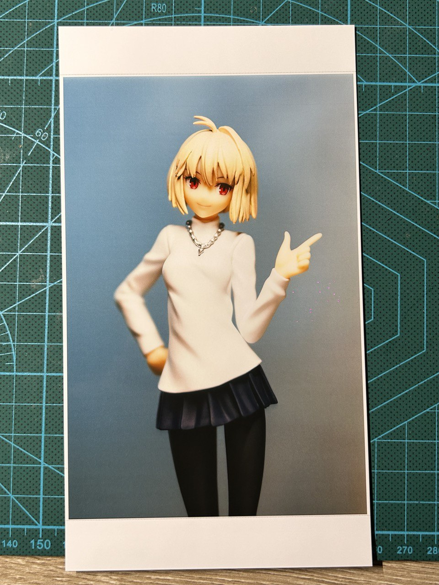

奇怪的反图方式增加了……
参烤链接：CUPS - ArchWiki。
安装 CUPS 和 ghostscript，启用 cups.service。
$ sudo pacman -S cups
$ sudo systemctl enable --now cups.service
小米的这个照片打印机支持免驱 AirPrint，所以直接使用 lpadmin 添加打印机就行，不用安装驱动（也根本找不到对应的 Linux 驱动），只需要先在路由器中查询打印机的 IP 地址。
$ sudo lpadmin -p "Xiaomi-Photo-AirPrint" -E -v "ipp://192.168.x.x/ipp/print" -m everywhere
之后打印照片时就可以选择已添加的打印机设备了。

初次打印时需要改一下打印的纸张大小为 4x6 英寸，不然照片尺寸会有问题，然后图片的质量可以改成最高。
照片打印出来会比屏幕上看到的更有内种感觉，打印的照片会有一些偏色，但个人认为这种色调害挺好看的。
